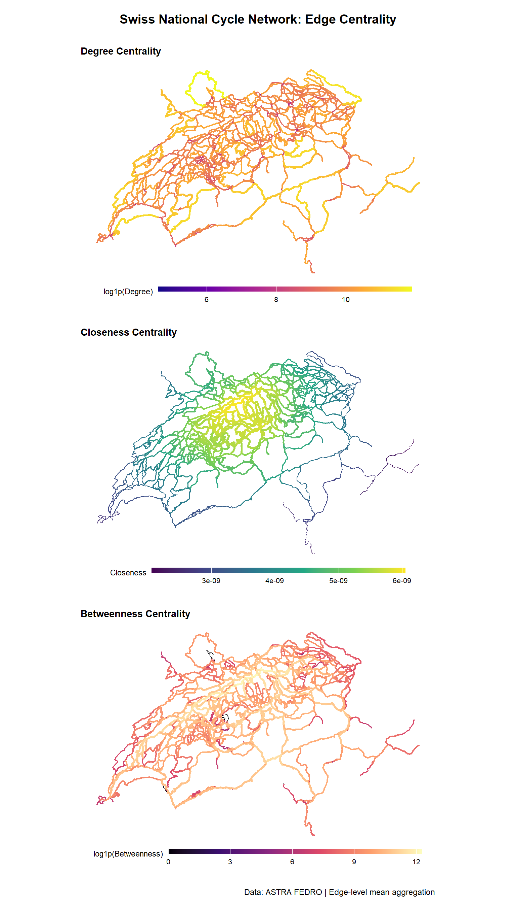
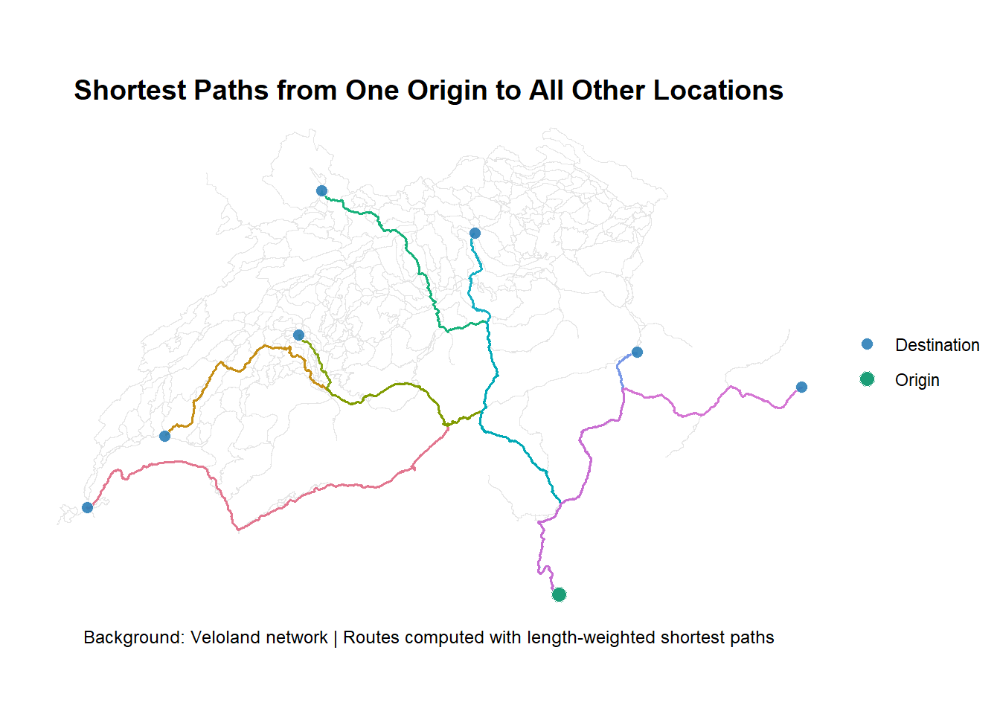

# Set working directory
setwd("C:/Workspace/ZHAW/6_Semester/STDS/network-analysis")
# Load libraries
library(sf)
library(sfnetworks)
library(tidygraph)
library(dplyr)
library(ggplot2)
library(patchwork)Solution for Network Analysis
Author: Florian Klaver
In this document, I solve the tasks for network analysis of the course Spatiotemporal Datascience.
Task 1: Centrality
In this task, you will analyze the cycle network of Switzerland using R. The dataset comes from the Federal Roads Office FEDRO (ASTRA).
The goal is to compute different centrality measures (degree, betweenness and closeness) for the nodes in the network and visualize the results. To do this, follow the following steps:
Load the rail network data using
sfConvert the data into an undirected network using
sfnetworksTo calculate centrality, the edges need to have “weights”. Assuming equal cycling speed on all roads, you can use the edge length (from the column length) as the weight.
To compute the centrality measures you will need to
- activate the nodes (using
tidygraph::activate()) - Use
dplyr::mutateto create new columns and populate these with the centrality measures using the functionscentrality_betweenness,centrality_closenessandcentrality_degreefromtidygraphusing the column length as weights.
- activate the nodes (using
Convert the enriched network consisting of edges and nodes back to
sfobjects consisting of lines and points (usingactivateandst_as_sf)The centrality values are attached to the points. Transfer the values to the lines by using the following function, which takes the mean centrality values over all nodes for each edge
aggregate(veloland_nodes, veloland_edges, FUN = "mean")Visualize the result. If necessary, transform or reasonably categorize the values to make them more comparable
Discuss the results: How do you interpret the differences?
Preparation
Analysis
# Check available layers in the database
st_layers("data/veloland.gpkg")Driver: GPKG
Available layers:
layer_name geometry_type features fields crs_name
1 veloland Line String 2066 1 CH1903+ / LV95## Step 1: Load the Veloland dataset
velo <- st_read("data/veloland.gpkg")Reading layer `veloland' from data source
`C:\Workspace\ZHAW\6_Semester\STDS\network-analysis\data\veloland.gpkg'
using driver `GPKG'
Simple feature collection with 2066 features and 1 field
Geometry type: LINESTRING
Dimension: XY
Bounding box: xmin: 2485756 ymin: 1076723 xmax: 2837853 ymax: 1297683
Projected CRS: CH1903+ / LV95colnames(velo)[1] "length" "geom" # Check for duplicates and NAs
sum(duplicated(velo))[1] 0sum(is.na(velo))[1] 0## Step 2: Convert to an undirected network
velo_net <- as_sfnetwork(velo, directed = FALSE)
## Step 3 and 4: Calculate centrality measures
# Activate nodes and use SHAPE_Length as the cost/weight for traveling between nodes
velo_net_centrality <- velo_net |>
activate("nodes") |>
mutate(
degree = centrality_degree(weights = length),
betweenness = centrality_betweenness(weights = length),
closeness = centrality_closeness(weights = length)
)
## Step 5: Convert back to sf objects
# Extract nodes as points, select only the calculated numeric columns
veloland_nodes <- velo_net_centrality |>
activate("nodes") |>
st_as_sf() |>
select(degree, betweenness, closeness)
# Extract edges as lines
veloland_edges <- velo_net_centrality |>
activate("edges") |>
st_as_sf()
## Step 6: Transfer node values to lines
veloland_edges_enriched <- aggregate(
x = veloland_nodes,
by = veloland_edges,
FUN = mean,
na.rm = TRUE # handle potential NA values
)
# Add log1p transforms for skewed measures to improve color variation in maps
veloland_edges_enriched <- veloland_edges_enriched |>
mutate(
betweenness_log1p = log1p(betweenness),
degree_log1p = log1p(degree)
)
# Quick diagnostics to spot problematic centrality outputs
if (any(!is.finite(veloland_nodes$closeness), na.rm = TRUE)) {
warning("Non-finite closeness values detected. The network may contain disconnected components.")
}
centrality_summary <- veloland_nodes |>
st_drop_geometry() |>
summarise(
across(
c(degree, betweenness, closeness),
list(
min = ~ min(.x, na.rm = TRUE),
median = ~ median(.x, na.rm = TRUE),
max = ~ max(.x, na.rm = TRUE),
na = ~ sum(is.na(.x)),
inf = ~ sum(is.infinite(.x))
)
)
)
centrality_summary# A tibble: 1 × 15
degree_min degree_median degree_max degree_na degree_inf betweenness_min
<dbl> <dbl> <dbl> <int> <int> <dbl>
1 4.39 9971. 146977. 0 0 0
# ℹ 9 more variables: betweenness_median <dbl>, betweenness_max <dbl>,
# betweenness_na <int>, betweenness_inf <int>, closeness_min <dbl>,
# closeness_median <dbl>, closeness_max <dbl>, closeness_na <int>,
# closeness_inf <int>Visualization
# Define common theme for all maps
map_theme <- theme_void() +
theme(
plot.title = element_text(hjust = 0, face = "bold", size = 11, margin = margin(t = 6, b = 4)),
legend.position = "bottom",
legend.key.width = unit(2.0, "cm"),
legend.key.height = unit(0.2, "cm"),
legend.title = element_text(vjust = 0.85, size = 8.5),
legend.text = element_text(size = 8),
legend.box.margin = margin(t = -2, b = 4),
plot.margin = margin(t = 8, r = 8, b = 10, l = 8)
)
# 1. Individual plots
p_degree <- ggplot(data = veloland_edges_enriched) +
geom_sf(aes(color = degree_log1p, linewidth = degree_log1p), lineend = "round") +
scale_color_viridis_c(option = "plasma") +
scale_linewidth_continuous(range = c(0.2, 1.0), guide = "none") +
labs(
title = "Degree Centrality",
color = "log1p(Degree)"
) +
coord_sf(datum = NA) +
map_theme
p_closeness <- ggplot(data = veloland_edges_enriched) +
geom_sf(aes(color = closeness, linewidth = closeness), lineend = "round") +
scale_color_viridis_c(option = "viridis") +
scale_linewidth_continuous(range = c(0.2, 1.0), guide = "none") +
labs(
title = "Closeness Centrality",
color = "Closeness"
) +
coord_sf(datum = NA) +
map_theme
p_betweenness <- ggplot(data = veloland_edges_enriched) +
geom_sf(aes(color = betweenness_log1p, linewidth = betweenness_log1p), lineend = "round") +
scale_color_viridis_c(option = "magma") +
scale_linewidth_continuous(range = c(0.2, 1.0), guide = "none") +
labs(
title = "Betweenness Centrality",
color = "log1p(Betweenness)"
) +
coord_sf(datum = NA) +
map_theme
# 2. Combine and render with explicit global controls
combined_plot <- (p_degree / p_closeness / p_betweenness) +
plot_annotation(
title = "Swiss National Cycle Network: Edge Centrality",
caption = "Data: ASTRA FEDRO | Edge-level mean aggregation",
theme = theme(
plot.title = element_text(hjust = 0.5, size = 14, face = "bold", margin = margin(t = 10, b = 10)),
plot.caption = element_text(size = 9, margin = margin(t = 12, b = 4))
)
)
# Print the final result
combined_plot
Discussion
The maps show clear spatial patterns across the Swiss cycle network.
Degree Centrality seems very similar for many of the edges. There is not much variation and I can’t see any clear patterns. The high alue of the single road around Basel is very intersting. Closeness centrality is highest on the Swiss Plateau (Mittelland), which sits more or less in the geographic center of the country and and has holds a large part of the population. Betweenness highlights a handful of corridors, mainly the main east-west routes that act as bridges for the whole network. Similar to the degree map, betweenn
One clear limitation is that we used physical edge length as the only weight. In Switzerland, a 10 km flat road and a 10 km mountain pass are treated as equal, which they obviously aren’t for a cyclist. Including elevation data (e.g., a digital elevation model) to estimate actual travel effort or time would give more realistic results. Another alternative would be to use actual cycling speed or infrastructure quality as weights. As a lesson learned, always think about whether distance alone is a meaningful cost in the context of your network.
Task 2: Routing
In this task, you will do your do your own routing using the Veloland dataset from the previous task (locations.gpkg on moodle). Import the two datasets and convert the Veloland dataset to an undirected network using sfnetworks, as you did before.
- Subset a single location and call this
origin - Create a second object with all the other locations and call this
destination - Use the function
st_network_pathsfromsfnetworksto calculate the shortest paths fromorigin, todestination, using the columnlengthas weight - The output returns a two column data.frame. The column
edge_pathsretuns the row numbers of the line segments that constitute the shortest path. Use these values to create ansfobject for each path. - Visualize the result in a map. Include
originanddestinationin your visualization.
Preparation
st_layers("data/locations.gpkg")Driver: GPKG
Available layers:
layer_name geometry_type features fields crs_name
1 locations Point 8 1 CH1903+ / LV95locations <- st_read("data/locations.gpkg")Reading layer `locations' from data source
`C:\Workspace\ZHAW\6_Semester\STDS\network-analysis\data\locations.gpkg'
using driver `GPKG'
Simple feature collection with 8 features and 1 field
Geometry type: POINT
Dimension: XY
Bounding box: xmin: 2499995 ymin: 1076852 xmax: 2837794 ymax: 1267861
Projected CRS: CH1903+ / LV95# Make sure the location points use the same CRS as the Veloland network from Task 1.
if (st_crs(locations) != st_crs(veloland_edges)) {
locations <- st_transform(locations, st_crs(veloland_edges))
}Analysis
# Reuse the Veloland network and edge geometries from Task 1.
# Define origin and destination points
origin <- locations |> slice(1)
destination <- locations |> slice(-1) |> mutate(destination_id = row_number())
# Calculate shortest paths from origin to every destination using edge length as weight.
route_paths <- st_network_paths(
x = velo_net,
from = origin,
to = destination,
weights = "length"
)
# Convert each edge path into a single sf geometry for plotting.
route_geometries <- lapply(route_paths$edge_paths, function(edge_ids) {
edge_ids <- edge_ids[!is.na(edge_ids)]
if (length(edge_ids) == 0) {
return(st_geometrycollection())
}
st_line_merge(st_union(st_geometry(veloland_edges[edge_ids, ])))[[1]]
})
route_results <- route_paths |>
st_drop_geometry() |>
mutate(
destination_id = destination$destination_id,
n_edges = lengths(edge_paths)
)
route_sf <- st_sf(
route_results,
geometry = st_sfc(route_geometries, crs = st_crs(veloland_edges))
)
route_sf$route_color <- grDevices::hcl.colors(nrow(route_sf), palette = "Dark 3")Visualization
ggplot() +
geom_sf(data = veloland_edges, color = "grey90", linewidth = 0.12) +
geom_sf(aes(color = route_color), data = route_sf, linewidth = 0.6, alpha = 0.9, show.legend = FALSE) +
geom_sf(aes(fill = "Destination"), data = destination, shape = 21, color = "white", size = 2.6, alpha = 0.9) +
geom_sf(aes(fill = "Origin"), data = origin, shape = 21, color = "white", size = 3.4) +
labs(
title = "Shortest Paths from One Origin to All Other Locations",
fill = NULL,
caption = "Background: Veloland network | Routes computed with length-weighted shortest paths"
) +
scale_color_identity() +
scale_fill_manual(values = c(Origin = "#1B9E77", Destination = "#2C7FB8")) +
coord_sf(datum = NA) +
theme_void() +
theme(
plot.title = element_text(face = "bold", size = 14, hjust = 0.5),
plot.caption = element_text(size = 9, hjust = 0.5),
plot.margin = margin(t = 10, r = 10, b = 10, l = 10)
)
Discussion
The map shows shortest paths by length from one origin in the south (Ticino) to five destinations spread across the country. The routes follow the Veloland network and look geographically reasonable — they take logical corridors through the Alps rather than cutting straight lines across terrain.
The main limitation here is the same as in Task 1: shortest by length is not the same as easiest or fastest. A route over the Gotthard is “short” on the map but very demanding in practice. An alternative would be to use a time- or effort-based weight instead of raw distance. Another limitation is that the routing is entirely dependent on the network being complete and connected — if a real road exists but is missing from the dataset, the algorithm cannot find it. As a lesson learned, the choice of weight has a big impact on which path the algorithm picks, and it is worth thinking carefully about what “shortest” should mean in context.